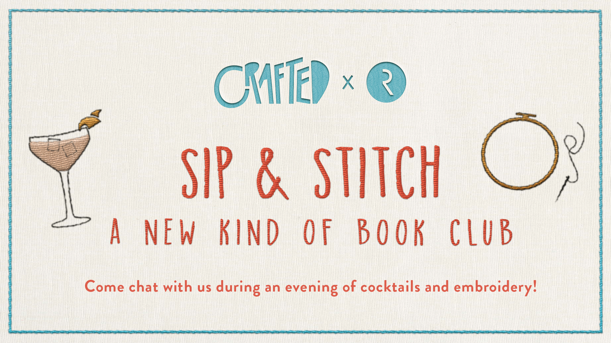
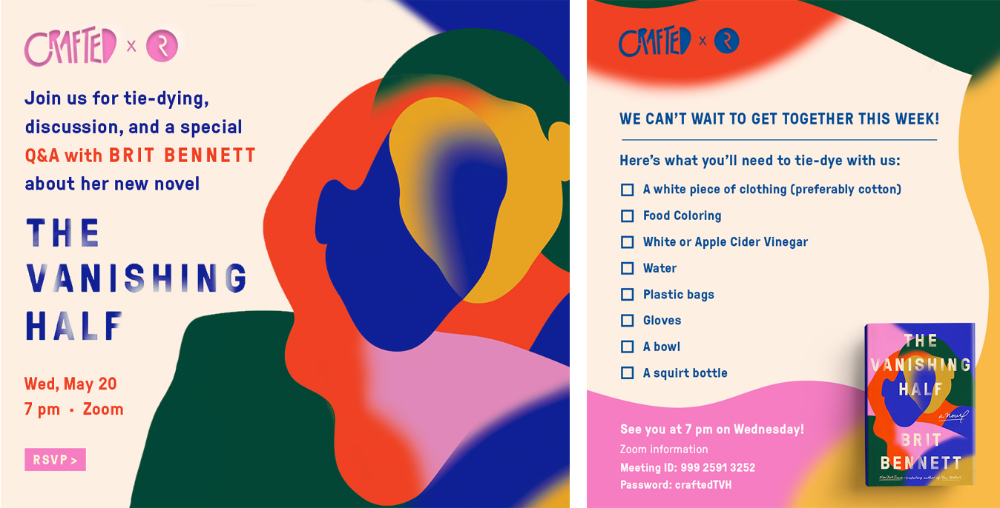

Crafted x Riverhead
CraftedxRiverhead is a crafting book club series that brings together Riverhead’s community in NYC. Each event features a Riverhead title or two, a craft, and plenty of snacks and drinks.
The events are as varied as the titles themselves, so the series needed a logo that could grow and change with it. Inspired by the tactile nature of creating, we proposed a logo that is shaped by the craft itself. Each event is branded as its own, allowing flexility and a collaborative nature to the series.
Designed at Penguin Random House in collaboration with Janay Frazier.
Crafted x Riverhead
CraftedxRiverhead is a crafting book club series that brings together Riverhead’s community in NYC. Each event features a Riverhead title or two, a craft, and plenty of snacks and drinks.
The events are as varied as the titles themselves, so the series needed a logo that could grow and change with it. Inspired by the tactile nature of creating, we proposed a logo that is shaped by the craft itself. Each event is branded as its own, allowing flexility and a collaborative nature to the series.
Designed at Penguin Random House in collaboration with Janay Frazier.
Sip & Stitch / The inaugural event featuring City of Girls by Elizabeth Gilbert and Red at the Bone by Jacqueline Woodson. Our look was simple and fun, drawing inspiration from the classic tradition of embroidery. We created simple hoop designs for guests of all stitching levels, and promoted the event on our socials.

Sip & Stitch / The inaugural event featuring City of Girls by Elizabeth Gilbert and Red at the Bone by Jacqueline Woodson. Our look was simple and fun, drawing inspiration from the classic tradition of embroidery. We created simple hoop designs for guests of all stitching levels, and promoted the event on our socials.

Bijou / This event invited everyone to make clay earrings, inspiring a fun brand that used organic shapes and trendy colors that inspired the earring shapes themselves. Everyone went home with a few sets of earrings on custom cards. This time, as we cozied up with two collections of short stories.

Bijou / This event invited everyone to make clay earrings, inspiring a fun brand that used organic shapes and trendy colors that inspired the earring shapes themselves. Everyone went home with a few sets of earrings on custom cards. This time, we cozied up with two collections of short stories.
The Vanishing Half / The COVID-19 pandemic forced our team to rethink this event in the wake of safety and a city in lockdown. This event was exclusive, and featured The Vanishing Half by Britt Bennett. The craft used common kitchen objects—food coloring, bleach, fabric—to bring a bit of joy and discussion in an unknown landscape.
The Vanishing Half / The COVID-19 pandemic forced our team to rethink this event in the wake of safety and a city in lockdown. This event was exclusive, and featured The Vanishing Half by Britt Bennett. The craft used common kitchen objects—food coloring, bleach, fabric—to bring a bit of joy and discussion in an unknown landscape.